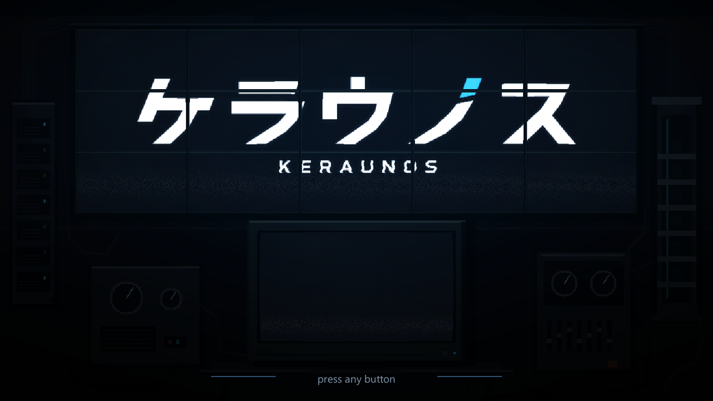
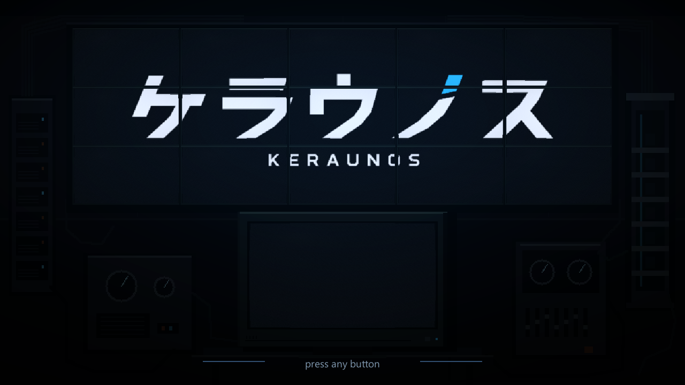

← 配布ページへ
タイトル画面の調整確認
継ぎ目を細くし、ロゴが現れた直後だけ明るくしました。
動画を開く
12秒・無音 ／ 実際のゲーム画面を撮影。スマホでは横向きでも確認できます。
最初から再生
動画を直接開く
壁のモニターは5列×3段のまま、縦横の継ぎ目を約半分の幅に調整。
ロゴ登場時の光は約2秒で落ち着き、通常時には繰り返しません。
部屋の暗さ、弱いぼかし、ゆっくり流れるノイズを保っています。
静止画で確認

表示直後

光が落ち着いた状態